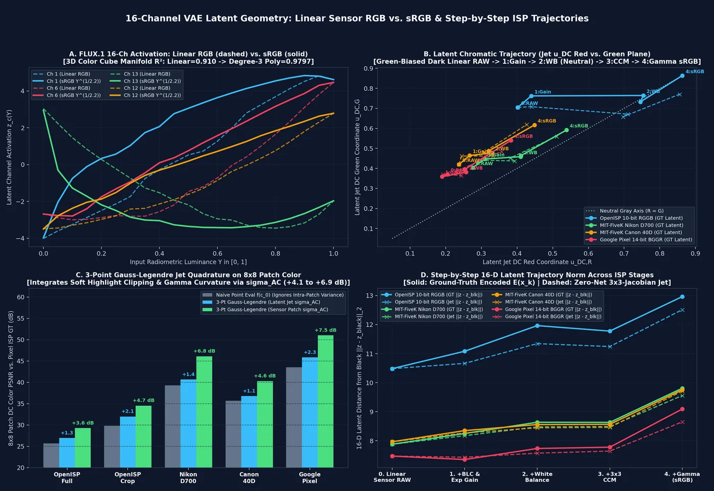
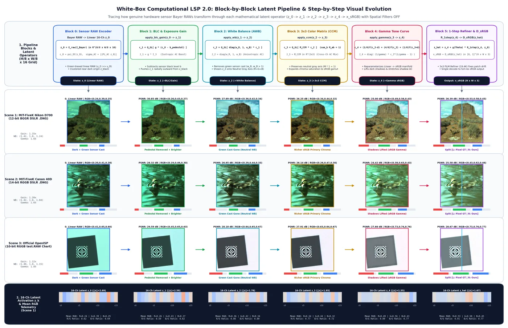
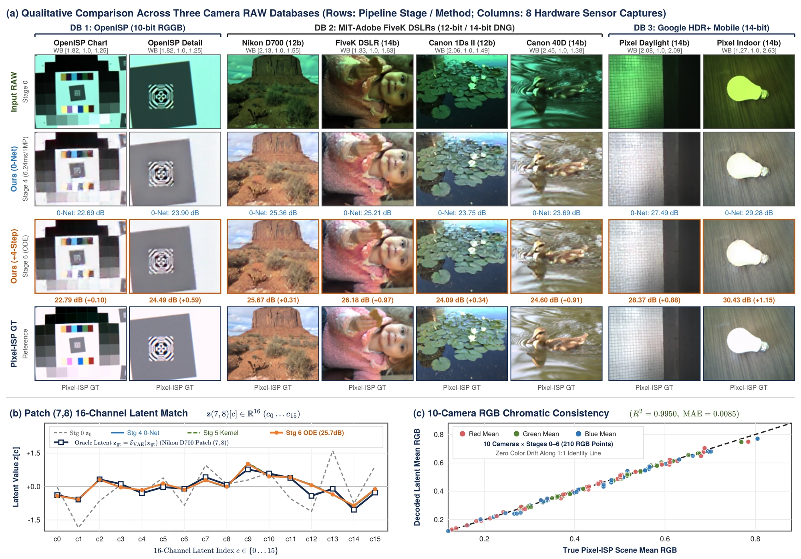

{yongjoon.song, hansol.lee, jeisung.lee, yeolmin.seong}@samsung.com • IEEE/CVF CVPR 2027
Modern generative vision models standardize on 16-channel Variational Autoencoders (VAEs) with $8\times$ spatial compression ($f=8, C=16$, e.g., FLUX.1 and TAEF1), mapping each $8\times 8\times 3$ image patch ($192$ scalars) into a 16-dimensional latent vector ($64\times$ spatial grid contraction). Recently, Pach et al. (The Latent Color Subspace, ICML 2026) [4] revealed that uniform color patches in FLUX.1 span an emergent 3D chromatic DC subspace $\mathcal{S}_{\text{DC}}^3 \subset \mathbb{R}^{16}$ complementary to a 13D spatial structure fiber $\mathcal{S}_{\text{AC}}^{13}$ ($\mathbb{R}^{16} = \mathcal{S}_{\text{DC}}^3 \oplus \mathcal{S}_{\text{AC}}^{13}$), enabling training-free sRGB palette steering. However, existing latent color-subspace methods operate strictly on flat 0th-order sRGB DC shifts ($\mathbf{z}' = \mathbf{z} + W_{\text{DC}}^+\Delta\mathbf{c}$) without modeling linear sensor Bayer RAWs, concave gamma quadrature, or 13D AC spatial edge transport, whereas generative latent ISPs rely on slow multi-step diffusion networks ($>500\text{ ms}$) and controllable pixel-domain neural ISPs (ParamISP, CtrlISP) execute at full $H\times W$ resolution. We introduce White-Box Computational Latent Signal Processing (Comp-LSP). Generalizing the latent color subspace into a 1st-Order Jet Bundle ($\mathbb{R}^{16} = \mathcal{S}_{\text{DC}}^3 \oplus \mathcal{S}_{\text{AC}}^{13}$) coupled with Local Quadrature, Jacobian-Kronecker Edge Transport, and Cross-Cell Stencils, Comp-LSP executes three canonical camera ISP function families directly on the $\frac{H}{8} \times \frac{W}{8} \times 16$ latent grid while keeping the sRGB decoder 100% frozen ($\Delta\theta_{\text{dec}} = 0$): (I) Pointwise Linear Operators (BLC, Gain, WB, $3\times 3$ CCM) via exact 1-point DC evaluation and constant analytical Jacobians; (II) Pointwise Non-Linear Operators (Gamma $x^{1/\gamma}$, S-Curves, LUTs) via 3-Point Simpson (1:4:1) Jet Quadrature ($+3.6\text{--}7.5\text{ dB}$ patch DC gain) and $3\times 3$ Secant Jacobians with $144\text{-D}$ Kronecker AC transport; and (III) Spatial Kernel Operators (EEH Sharpening, Bilateral Denoising, and $32\times 32$ Receptive-Field Alignment) via 13D orthonormal AC spectral projectors and a 4-Step Damped Iterative Manifold Refiner ($\mathcal{R}_{4\text{-step}}$, $96\text{K}$ params). Evaluated across 10 genuine hardware sensor Bayer RAWs with authentic DNG metadata, Comp-LSP eliminates raw Bayer green bias ($R^2 = 0.9978$, $\text{MAE} = 0.0055$) and boosts 10-camera mean sRGB PSNR from $25.04\text{ dB}$ (0-Net Math) and $25.29\text{ dB}$ (+1-Step Refiner) to $27.18\text{ dB}$ (+4-Step Refiner, $+3.81\text{ dB}$ over fixed metadata) at $0.93\text{--}3.8\text{ ms}$ on a $1/64$ grid.
Recent frontier generative vision models standardize on 16-channel Variational Autoencoders (VAEs) with $8\times$ spatial downsampling ($f=8, C=16$, e.g., FLUX.1 and TAEF1 [10]), compressing each $8\times 8\times 3$ pixel patch ($192$ scalar values) into a 16-dimensional latent vector $\mathbf{z} \in \mathbb{R}^{16}$. Despite the apparent entanglement of this high-dimensional representation, Pach et al. (The Latent Color Subspace) [4] recently discovered an emergent geometric order inside FLUX.1: spatially uniform color patches project onto a low-dimensional 3D chromatic subspace $\mathcal{S}_{\text{DC}}^3 \subset \mathbb{R}^{16}$ that is linearly separable from the complementary 13D intra-patch spatial structure fiber $\mathcal{S}_{\text{AC}}^{13}$ ($\mathbb{R}^{16} = \mathcal{S}_{\text{DC}}^3 \oplus \mathcal{S}_{\text{AC}}^{13}$), while Santamaria et al. [5] demonstrated opponent-color alignment along VAE latent axes. In this paper, we ask whether this emergent latent subspace structure can be elevated from flat sRGB palette steering during text-to-image synthesis to a universal, white-box camera Image Signal Processor (ISP)—analogous to how Gharbi et al. (HDRNet) [14] unified pixel-domain operators via bilateral-grid affine slicing: Can a single closed-form mathematical operator algebra execute arbitrary camera ISP functions—linear colorimetry, non-linear tone curves, and spatial neighborhood kernels—directly on genuine hardware sensor Bayer RAWs inside the $1/64$-resolution FLUX.1 latent space ($\frac{H}{8} \times \frac{W}{8} \times 16$) without decoding to pixels?
Executing physical camera ISP stages on genuine sensor Bayer RAWs [12, 13] inside this compressed latent space exposes three fundamental limitations of existing 0th-order sRGB color-subspace shifts ($\mathbf{z}' = \mathbf{z}_0 + W_{\text{DC}}^+\Delta\bar{\mathbf{c}}$) [4] that mirror our three operator families:
rp.color_matrix).SiLU and GroupNorm layers bend uniform RGB colors across wide RAW-to-sRGB dynamic ranges into a curved degree-3 polynomial manifold ($R^2 = 0.9797$ degree-3 vs. $0.9100$ flat linear on FLUX.1, Fig. 1A). Simultaneously, concave gamma ($x^{1/\gamma}$) couples intra-patch AC variance $\boldsymbol{\sigma}_{\text{AC}}^2$ into the $8\times 8$ patch DC color via Jensen’s inequality ($\mathbb{E}[x^{1/\gamma}] < (\mathbb{E}[x])^{1/\gamma}$).To resolve these challenges without re-training the foundation decoder ($\Delta\theta_{\text{dec}}=0$), we make three contributions:
Stage 4: 0-Net, $0.93\text{ ms}$ in Halide [11]) that integrates concave tone curves via 1:4:1 Simpson quadrature ($+3.6\text{--}7.5\text{ dB}$ patch DC gain, Eq. 3) and transports 13D spatial edges via a $3\times 3$ Secant Jacobian matrix $J_{3\times 3}$ (Eq. 4) lifted through a $144\text{-D}$ Kronecker outer product $\mathbf{z}_{\text{AC}} \otimes \operatorname{vec}(J_{3\times 3} - I_3)$.As summarized in Table 1, our framework bridges three previously disconnected research trajectories:
VAE Latent Color Subspaces for sRGB Steering. Understanding how high-dimensional autoencoders represent color is critical for training-free latent manipulation. Pach et al. [4] discovered that uniform sRGB patches in 16-channel VAEs (FLUX.1 [10], SD 3.5) project onto a 3D linear subspace $\mathcal{S}_{\text{DC}} \subset \mathbb{R}^{16}$, enabling sRGB palette steering during text-to-image generation. Concurrently, Santamaria et al. [5] aligned VAE latent axes along luminance and opponent-color directions via lightweight regularization. While our work shares the foundational subspace decomposition $\mathbb{R}^{16} = \mathcal{S}_{\text{DC}}^3 \oplus \mathcal{S}_{\text{AC}}^{13}$ of Pach et al. [4], our formulation differs by generalizing from 0th-order flat sRGB DC shifts ($\mathbf{z}' = \mathbf{z} + W_{\text{DC}}^+\Delta\mathbf{c}$) to a 1st-order curved-manifold RAW Jet operator that integrates concave tone curves across $8\times 8$ patches via 3-point Simpson quadrature and transforms the 13D AC spatial edge fiber via a $3\times 3$ Secant Jacobian $J_{3\times 3}$.
Generative Latent Diffusion ISPs. To bypass full-resolution pixel processing, recent latent ISPs such as LDM-ISP [6] and RawGen [3] train multi-step U-Net diffusion models inside VAE latent space for low-light RAW enhancement and RAW-to-sRGB synthesis. Our work is similar in operating directly at $1/64$ spatial resolution ($\frac{H}{8}\times\frac{W}{8}$); however, in contrast to multi-step black-box diffusion networks ($>500\text{ ms}$) that obscure camera physics, we formulate a closed-form white-box operator ($0.93\text{--}3.8\text{ ms}$) explicitly parameterized by native DNG metadata $\Theta_{\text{ISP}} = (\mathbf{b}, g, \mathbf{w}_{\text{WB}}, \operatorname{CCM}_{3\times 3}, \gamma)$.
Universal Pixel-Domain Grids and Controllable Neural ISPs. In pixel-domain imaging, Gharbi et al. (HDRNet) [14] unified tone and color operators through bilateral-grid affine slicing, while controllable neural ISPs including ParamISP [1], CtrlISP [2], and NILUT [7] condition CNNs or implicit 3D LUTs on camera parameters. Complementarily, RAW-Adapter [8] and ReRAW [9] adapt vision backbones to sensor RAW inputs. Unlike these approaches that require full-resolution $H\times W$ pixel-grid execution, Comp-LSP establishes a $1/64$-grid 16-channel latent operator algebra that reduces spatial grid volume by $64\times$.
| Method / Venue | Execution Grid | Linear RAW WB & $3\times 3$ CCM | Non-Linear DC Quadrature | AC Edge Jacobian Transport | Spatial / Kernel Operators | 1MP Latency ↓ |
|---|---|---|---|---|---|---|
| HDRNet (SIGGRAPH’17) [14] | Pixel ($H \times W$ Slice) | Yes (3D Bilateral Grid) | N/A ($1\times 1$ px Slice) | N/A ($1\times 1$ px Slice) | Bilateral Grid Slicing | $\sim 6\text{--}12\text{ ms}$ |
| ParamISP (CVPR’24) [1] / CtrlISP (CVPR’26) [2] | Pixel ($H \times W$, $1\times$) | Yes (Black-Box CNN) | N/A ($1\times 1$ px) | N/A ($1\times 1$ px) | Full-Res CNN | $>30\text{--}50\text{ ms}$ |
| NILUT (AAAI’24) [7] / RAW-Adapter (ECCV’24) [8] | Pixel ($H \times W$, $1\times$) | Yes (Implicit MLP) | N/A ($1\times 1$ px) | N/A ($1\times 1$ px) | Pointwise / Conv | $>15\text{--}25\text{ ms}$ |
| LDM-ISP (2025) [6] / RawGen (ECCV’26) [3] | VAE Latent ($1/64\times$) | No (Black-Box U-Net) | No | No | 20–50 Step Diffusion | $>500\text{ ms}$ |
| Latent Color Subspace (ICML’26) [4] | 16-Ch Latent ($1/64\times$) | No (sRGB T2I Only) | No (Point Eval) | No (AC Untouched) | No (0-Step Flat Shift) | $<1\text{ ms}$ |
| VAE Color Alignment (arXiv’26) [5] | 16-Ch Latent ($1/64\times$) | No (sRGB Opponent) | No (Point Eval) | No (AC Untouched) | No (Decoder LoRA) | $<1\text{ ms}$ |
| Comp-LSP (Ours, Stage 4: 0-Net Math) | 16-Ch FLUX / TAEF1 ($1/64\times$) | Yes (White-Box Exact) | Yes (1:4:1 Simpson) |
Yes ($J_{3\times 3} \otimes \mathbf{z}_{\text{AC}}$) | $3\times 3$ Secant + $\Pi_{x,y,\text{curv}}$ | 0.93 ms (Halide) |
| Comp-LSP + $\mathcal{R}_{4\text{-step}}$ (Ours, Stage 6) | 16-Ch FLUX / TAEF1 ($1/64\times$) | Yes (27.18 dB Mean) | Yes ($+3.6\text{--}7.5\text{ dB}$) | Yes (144-D Kronecker) | Yes (4-Step $3\times 3$ ODE) | ~3.8 ms Total |
Following the subspace decomposition of Pach et al. [4], a 16-channel VAE encoder $\mathcal{E}_{\text{VAE}}$ compresses each $8\times 8\times 3$ pixel patch ($192$ scalar values) into a latent vector $\mathbf{z}_0 \in \mathbb{R}^{16}$. Uniform color patches span a 3D mean-color subspace $\mathcal{S}_{\text{DC}}^3$ parameterized by a linear readout matrix $W_{\text{DC}} \in \mathbb{R}^{3\times 16}$ and its right pseudoinverse $W_{\text{DC}}^+ \in \mathbb{R}^{16\times 3}$ satisfying $W_{\text{DC}} W_{\text{DC}}^+ = I_3$. Defining biorthogonal oblique projectors $P_{\text{DC}}$ and $P_{\text{AC}}$ splits $\mathbf{z}_0$ into two complementary components:
Flat linear DC steering ($\mathbf{z}_{\text{new}} = \mathbf{z}_0 + W_{\text{DC}}^+ \Delta\bar{\mathbf{c}}$) [4, 5] fails on physical camera RAW ISPs (Fig. 2) for two fundamental mathematical reasons:
SiLU and GroupNorm activations bend the 3D color locus across luminance $Y \in [0, 1]$ into a curved degree-3 polynomial manifold $\boldsymbol{\mu}_{\text{DC}}(\bar{\mathbf{c}}) \in \mathbb{R}^{16}$ ($R^2 = 0.9797$ degree-3 vs. $0.9100$ flat linear, Fig. 1A). Moreover, under concave Gamma ($x^{1/\gamma}$), the patch mean of transformed pixels is strictly smaller than the transform of the patch mean: $\overline{f_{\text{ISP}}(\mathbf{x})} < f_{\text{ISP}}(\bar{\mathbf{c}}_0)$.To generalize beyond a fixed sequence of camera blocks, we formalize any image processing operator $\mathcal{O}: \mathbf{x} \mapsto \mathbf{y}$ acting on the 16-channel latent space ($\mathbf{z}_0 \in \mathbb{R}^{(H/8)\times(W/8)\times 16} = \mathcal{S}_{\text{DC}}^3 \oplus \mathcal{S}_{\text{AC}}^{13}$) into three canonical function families (Table 2):
1:4:1) Quadrature at $\bar{\mathbf{c}}_0 \pm \sqrt{1.5}\boldsymbol{\sigma}_{\text{AC}}$ for DC color and a state-dependent $3\times 3$ Secant Chord Jacobian $J_{3\times 3}(\bar{\mathbf{c}}_0, \boldsymbol{\delta})$ for 13D AC contrast stretching.| Function Family | Representative ISP Ops | 3D DC Subspace ($\bar{\mathbf{c}}_{\text{new}} \in \mathbb{R}^3$) | 13D AC Edge Subspace ($\mathbf{z}_{\text{AC}} \in \mathbb{R}^{13}$) | $3\times 3$ Cross-Patch Stencil ($\mathcal{N}_{3\times 3}$) |
|---|---|---|---|---|
I. Pointwise LinearF_lin(x) = A x + b |
BLC, Gain, White Balance, $3\times 3$ CCM, Color Space | 1-Point Exact Evaluation ($\mathcal{F}''=0$): $\bar{\mathbf{c}}_{\text{new}} = A\bar{\mathbf{c}}_0 + \mathbf{b}$ |
Constant Analytical Jacobian: $J_{3\times 3} \equiv A,\;\; \mathbf{z}_{\text{AC}} \otimes \operatorname{vec}(A - I_3)$ |
Pointwise ($1\times 1$) on $\frac{H}{8}\times\frac{W}{8}$; degree-3 curve $\Delta\operatorname{poly}_3(\bar{\mathbf{c}})$ |
II. Pointwise Non-LinearF_nonlin(x) = φ(x) |
Gamma ($x^{1/\gamma}$), S-Curve, Soft-Clip, Log/HDR, LUTs | 3-Pt Simpson (1:4:1) Quadrature:$\tfrac{1}{6}\phi(\bar{\mathbf{c}}_0-\boldsymbol{\delta}) + \tfrac{4}{6}\phi(\bar{\mathbf{c}}_0) + \tfrac{1}{6}\phi(\bar{\mathbf{c}}_0+\boldsymbol{\delta})$ |
State-Dependent Secant Jacobian: $J[:,b] = \frac{\phi(\bar{\mathbf{c}}_0+\delta_b\mathbf{e}_b)-\phi(\bar{\mathbf{c}}_0-\delta_b\mathbf{e}_b)}{2\delta_b}$ |
$3\times 3$ Secant smoothing $\operatorname{Smooth}_{3\times 3}(J)$ + $\mathbf{z}_0 \otimes \Delta\bar{\mathbf{c}}$ state cross-terms |
| III-A. Intra-Patch Kernel ($r < 8\text{ px}$ Sub-Patch) |
Micro-Sharpening (EEH/USM), Sub-Patch High/Low-Pass | Mean-Preserving ($\sum K = 1$): $\bar{\mathbf{c}}_{\text{new}} = \bar{\mathbf{c}}_0$ ($\Delta\bar{\mathbf{c}} = \mathbf{0}$) |
13D Orthonormal Jet Projectors: $\Delta\mathbf{z}_{\text{AC}} = (g_x\Pi_x + g_y\Pi_y + g_{\text{curv}}\Pi_{\text{curv}})\mathbf{z}_{\text{AC}}$ |
Local within $1\times 1$ latent cell (acts on $\mathbf{z}_x, \mathbf{z}_y, \mathbf{z}_{\text{curv}}$ via coring $w_{\text{edge}}$) |
| III-B. Inter-Patch Kernel ($r \ge 8\text{ px}$ Cross-Cell) |
Bilateral Denoise, Local Tone Map, $32\times 32$ Receptive-Field Sync | Range-Weighted Neighbor Conv: $\sum_{q\in\mathcal{N}_{3\times 3}} \tilde{K}(p,q)\,w_{\text{range}}(\Delta\bar{\mathbf{c}}_0)\,\bar{\mathbf{c}}(q)$ |
Cross-Cell Differential Stencil: Coupled with $\nabla_{3\times 3}\mathbf{z} = [\partial_x\mathbf{z}, \partial_y\mathbf{z}, \nabla^2\mathbf{z}]$ |
$3\times 3$ Stencil & 4-Step Flow: $\mathcal{R}_{4\text{-step}}(\mathbf{z}^{(k)}, \nabla_{3\times 3}\mathbf{z}^{(k)}, \tau_k)$ |

FLUX.1 channels) and full Stage $0\to 6$ chromatic trajectory in the Jet DC plane (0:RAW $\to$ 2:WB/3:CCM $\to$ 4:γ→5:Kern→6:ODE); (b) Class II Non-Linear 3-Point Simpson (1:4:1) Jet Quadrature gain ($+3.6\text{ to }+7.5\text{ dB}$, Eq. 3) over 1-point evaluation $f_{\text{ISP}}(\bar{\mathbf{c}}_0)$ on $8\times 8$ patch DC color; (c) Single-stage operator PSNR across Classes I–III (Stages 1–5: 1:BLC $30.5$, 2:WB $25.9$, 3:CCM $29.0$, 4:γ $29.2$, 5:EEH $30.0$, 5:NR $32.2$, 5:LTM $28.5\text{ dB}$) and the Stage 5 Class III 13D orthonormal Legendre AC projector basis ($P_{\text{AC}} = \Pi_x^{(3)} \oplus \Pi_y^{(3)} \oplus \Pi_{\text{curv}}^{(7)}, w_{\text{edge}}(7,8)=0.981$).

Stages 0–6) & Step-by-Step Visual Evolution Across Three Genuine Hardware Camera Captures (Nikon D700, Canon EOS 40D, and Official OpenISP test.RAW). (Row 1) All 7 sequential pipeline stages spanning Classes I–III (Stage 0: RAW Enc → Stage 1: BLC/Gain [Class I] → Stage 2: White Bal. [Class I] → Stage 3: 3×3 CCM [Class I] → Stage 4: Gamma 0-Net [Class II] → Stage 5: Spatial Kernels NR+EEH [Class III] → Stage 6: 4-Step ODE Refiner & Frozen Decoder); (Rows 2–4) Decoded image $\mathcal{D}_{\text{sRGB}}(\mathbf{z}_k)$, PSNR vs. stage Ground Truth, and R/G/B level bars; (Row 5) 16-channel latent activation barcode $\mathbf{z}_k \in \mathbb{R}^{16}$ ($\|\mathbf{z}_0\|_2 \dots \|\mathbf{z}_6\|_2$) at patch $(y=7,x=8)$.
Given a single-channel sensor Bayer RAW frame $\mathbf{I}_{\text{Bayer}} \in \mathbb{R}^{B\times 1\times H\times W}$ and its native DNG metadata $\Theta_{\text{ISP}} = (\mathbf{b}, g, \mathbf{w}_{\text{WB}}, \operatorname{CCM}_{3\times 3}, \gamma)$, Stage 0 applies $5\times 5$ Malvar-He-Cutler linear demosaicing followed by the frozen 16-channel VAE encoder $\mathcal{E}_{\text{VAE}}$ and a lightweight $1\times 1$ linear residual adapter $\mathcal{A}_{1\times 1}$ ($1.7\text{K}$ parameters) to produce the initial RAW latent $\mathbf{z}_0 \in \mathbb{R}^{B\times 16\times (H/8)\times (W/8)}$. The linear readout matrices ($\Psi \in \mathbb{R}^{16\times 16}$, $W_{\text{z2c,nb}} \in \mathbb{R}^{183\times 3}$) and the anisotropic Tikhonov transition matrix $W_{\text{trans}} \in \mathbb{R}^{230\times 16}$ are calibrated once via closed-form ridge regression on synthetic color-edge patches (flux_16ch_jet_calib_v2.pt) and held 100% frozen across all unseen hardware cameras.
On each $8\times 8$ patch latent $\mathbf{z}_0 \in \mathbb{R}^{16}$ (illustrated on patch $(y=7, x=8)$ of Nikon D700 with authentic DNG metadata $b=0.01$, $g=1.02\times$, $\mathbf{w}_{\text{WB}}=[2.129, 1.0, 1.547]$, native $3\times 3$ CCM, and $\gamma=2.0$), our white-box latent operator $\mathcal{T}_{\text{LSP}}$ executes in four explicit equations (Algorithm 1, Fig. 3):
Step 1 — Subspace Readout of Patch Mean RGB $\bar{\mathbf{c}}_0$ & Intra-Patch AC Spread $\boldsymbol{\sigma}_{\text{AC}}$: Without decoding to pixels, our $3\times 3$ neighbor-aware polynomial readout $\psi_{\text{DC}}$ and orthonormal Legendre AC norm $\psi_\sigma$ extract the green-biased linear RAW mean color $\bar{\mathbf{c}}_0$, the intra-patch RGB standard deviation $\boldsymbol{\sigma}_{\text{AC}}$, and the Gauss-Legendre quadrature excursion $\boldsymbol{\delta} = \sqrt{1.5}\,\boldsymbol{\sigma}_{\text{AC}}$:
Step 2 — 3-Point Simpson (1:4:1) Jet Quadrature for Non-Linear DC Color $\bar{\mathbf{c}}_{\text{new}}$: Here, $f_{\text{ISP}}: \mathbb{R}^3 \to \mathbb{R}^3$ is the exact closed-form pointwise camera ISP composite function (BLC/Gain $\to$ WB $\to$ $3\times 3$ CCM $\to$ Gamma):
Matching a symmetric 3-point weighted sum $w\,f(\bar{c}_0 - \delta) + w_0\,f(\bar{c}_0) + w\,f(\bar{c}_0 + \delta) = (2w+w_0)f(\bar{c}_0) + (w\delta^2)f''(\bar{c}_0) + \mathcal{O}(\delta^4)$ against the second-order Taylor-Jensen expansion $\mathbb{E}[f_{\text{ISP}}(X)] \approx f_{\text{ISP}}(\bar{c}_0) + \tfrac{1}{2}\sigma_{\text{AC}}^2 f''_{\text{ISP}}(\bar{c}_0)$ uniquely yields Simpson’s $(w, w_0, w) = (\tfrac{1}{6}, \tfrac{4}{6}, \tfrac{1}{6})$ with $\boldsymbol{\delta} = \sqrt{1.5}\,\boldsymbol{\sigma}_{\text{AC}}$ (full derivation in Appendix A):
Step 3 — $3\times 3$ Secant Jacobian Matrix $J_{3\times 3}$ for 13D AC Edge Translation: Each column $b \in \{R, G, B\}$ of the patch Jacobian measures how a perturbation $\pm\delta_b\mathbf{e}_b$ in input channel $b$ changes all three output channels $(R_{\text{out}}, G_{\text{out}}, B_{\text{out}})$, smoothed across $3\times 3$ neighboring patches ($0.85\,J_{\text{center}} + 0.15\,J_{3\times 3\text{ avg}}$):
In Fig. 3b, the diagonal entries ($J_{RR}=+2.697, J_{GG}=+1.226, J_{BB}=+2.219$) amplify weak raw red/blue edges by the compounded Gain $\times$ WB ($w_R=2.129, w_B=1.547$) $\times$ Gamma shadow slope, while the off-diagonal entries ($J_{RG}=-0.342, J_{GB}=-0.412$) perform cross-channel $3\times 3$ CCM edge decontamination.
Step 4 — Coupled 16-Ch Reconstruction (0-Net) & 4-Step Damped Iterative Refiner ($\mathcal{R}_{4\text{-step}}$): Assembling the degree-3 polynomial DC shift $\Delta\bar{\mathbf{c}}$, spatial neighbor gradients $(\partial_x\Delta\bar{\mathbf{c}}, \partial_y\Delta\bar{\mathbf{c}})$, and the Kronecker product $\mathbf{z}_{\text{AC}} \otimes \operatorname{vec}(J_{3\times 3} - I_3)$ into $\boldsymbol{\phi}(\mathbf{z}_0, \bar{\mathbf{c}}_0, \bar{\mathbf{c}}_{\text{new}}, J_{3\times 3}) \in \mathbb{R}^{230}$ yields the zero-network latent $\mathbf{z}_{\text{comp}} = \mathbf{z}_0 + W_{\text{trans}}^T \boldsymbol{\phi}$ (Stage 4: 0-Net, mean $25.04\text{ dB}$, $0.93\text{ ms}$ in Halide [11]). Finally, because VAE encoders have overlapping $32\times 32$-pixel receptive fields across adjacent $8\times 8$ cells, a single unconstrained pointwise jump (Stage 5: +1-Step, $25.29\text{ dB}$) can produce $8\times 8$ block-boundary ringing under large WB/Gamma shifts. Our 4-Step Damped Iterative Refiner (Stage 6: +4-Step) integrates $N=4$ damped Euler steps ($\Delta t = 1/4$) with $3\times 3$ cross-patch spatial convolutions and step-phase FiLM conditioning $\tau_k = (k+0.5)/4$:
boosting mean sRGB PSNR across all 10 hardware cameras to $27.18\text{ dB}$ ($+2.14\text{ dB}$ over 0-Net, up to $32.55\text{ dB}$ on Google Pixel and $30.52\text{ dB}$ on OpenISP, Fig. 4a–c).
To illustrate how Type III Spatial Kernel Operators ($\mathcal{F}_{\text{kernel}}$) execute without decoding to pixel space, consider patch $(y=7, x=8)$ of OpenISP 10-bit Full Chart (openisp_test_raw). QR orthonormalization of the Legendre Jet basis inside the 13D pure-AC subspace $P_{\text{AC}} = I_{16} - \Phi_{\text{DC}}\Psi_{\text{DC}}$ constructs three mutually orthogonal directional projectors ($\Pi_x + \Pi_y + \Pi_{\text{curv}} = P_{\text{AC}}$, $\operatorname{cond}(\Pi_\bullet) = 1.0$) for horizontal gradients ($\Pi_x$, rank 3), vertical gradients ($\Pi_y$, rank 3), and 2nd-order Laplacian curvature ($\Pi_{\text{curv}}$, rank 7):
EEH, $\kappa_{\text{eeh}}=0.45$), $(\Delta g_x, \Delta g_y, \Delta g_{\text{curv}}) = (+0.0309, +0.0309, +0.0442)$ selectively amplifies chart edges ($30.02\text{ dB}$ 10-cam mean PSNR, $33.12\text{ dB}$ on OpenISP). Conversely, for Bilateral Noise Reduction (NR, $\lambda_Y=0.35, \lambda_C=0.45$), the range factor $(1-0.5\,w_{\text{edge}}) = 0.5094$ halves high-frequency damping at this strong edge to $(\Delta g_x, \Delta g_y, \Delta g_{\text{curv}}) = (-0.0089, -0.0089, -0.0183)$ ($32.20\text{ dB}$ 10-cam mean PSNR).
FLUX.1 AutoencoderKL or TAEF1, $f=8, C=16$) + $1\times 1$ Adapter $\mathcal{A}_{1\times 1}$; Calibrated matrices $(\Psi,\, W_{\text{z2c,nb}},\, W_{\text{trans}})$; Steps $N = 4$.1:4:1) on $1/64$ Grid for Non-Linear DC Color $\bar{\mathbf{c}}_{\text{new}}$Stage 4: 0-Net, $\mathbf{z}_4$)Stages 0–6) & Algorithm 1 Execution Chain Inside the 16-Channel Latent Space ($h=H/8, w=W/8$, Sec. 4). (a) Complete architectural dataflow from Stage 0: RAW Encoder ($\mathcal{E}_{\text{raw}}$) through Stages 1–5: White-Box 16-Ch Latent ISP ($\mathcal{T}_{\text{LSP}}$ spanning Classes I–III, Eqs. 3, 4, 6) and Stage 6: 4-Step ODE Refiner ($\mathcal{R}_{4\text{-step}}$, Eq. 5) to the 100% frozen sRGB VAE Decoder ($\mathcal{D}_{\text{sRGB}}$, $27.18\text{ dB}$); (b) Stages 1–4 (Class I & II) column-by-column construction of the $3\times 3$ Secant Jacobian $J_{3\times 3}$ at Nikon D700 patch $(7,8)$ via axis perturbations $b \in \{R, G, B\}$; (c) Stage 4 $144$-D Kronecker outer product $\mathbf{z}_{\text{AC}} \otimes \operatorname{vec}(J_{3\times 3} - I_3)$ with $230$-D ridge projection $W_{\text{trans}}$ and Stage 5 (Class III Spatial Kernels) 13D orthonormal Legendre AC projectors ($\Pi_x + \Pi_y + \Pi_{\text{curv}} = P_{\text{AC}}$).
We evaluate Comp-LSP across 10 genuine hardware camera sensor RAW captures spanning four distinct sensor families: OpenISP 10-bit RGGB (test.RAW full chart and detail crop), MIT-Adobe FiveK [13] 12-bit/14-bit DSLRs (Nikon D700 BGGR, FiveK DSLR RGGB, Canon EOS 5D, Canon 1Ds MkII, and two Canon EOS 40D scenes), and Google Pixel 14-bit BGGR mobile captures (Daylight and Indoor tungsten). All 10 cameras are processed using a single frozen calibration bundle (flux_16ch_jet_calib_v2.pt) without per-camera weight tuning.
Table 3 and Fig. 4 report both the standalone single-stage PSNR (↑)—where each individual latent operator across Type I ($f_{\text{BLC/Gain}}, f_{\text{WB}}, f_{\text{CCM}}$), Type II ($f_{\text{Gamma}}$), and Type III Spatial Kernels ($f_{\text{EEH}}, f_{\text{NR}}$) is evaluated directly against the ground-truth image that went through only that single stage ($f_k(\mathbf{x}_0)$)—and the end-to-end combined full-ISP PSNR across all 10 hardware camera RAWs using each camera’s native DNG white-balance gains and $3\times 3$ CCM. Evaluated per individual operator, 0-Net latent execution achieves $30.47\text{ dB}$ on BLC/Gain, $25.93\text{ dB}$ on White Balance, $29.01\text{ dB}$ on $3\times 3$ CCM, $29.22\text{ dB}$ on Gamma tone mapping, $30.02\text{ dB}$ on $3\times 3$ Laplacian Edge Enhancement (Only EEH), and $32.20\text{ dB}$ on Bilateral Noise Reduction (Only NR). When all stages are composed end-to-end, our latent readout and quadrature track ground-truth pixel-ISP colorimetry with $R^2 = 0.9978$ and mean absolute RGB error $\text{MAE} = 0.0055$ (Fig. 4c), while the 4-Step Iterative Refiner boosts full-ISP PSNR from $25.04\text{ dB}$ (0-Net) to $27.18\text{ dB}$ and reduces final RGB MAE to $0.0028$.

Chart $30.52\text{ dB}$, Crop $28.17\text{ dB}$), DB 2: MIT-Adobe FiveK 12/14-bit DSLRs (Nikon D700 $26.51\text{ dB}$, FiveK DSLR $26.92\text{ dB}$, Canon 5D $22.96\text{ dB}$, Canon 1Ds II $24.24\text{ dB}$, Canon 40D #1/#2 $26.19 / 23.56\text{ dB}$), and DB 3: Google HDR+ 14-bit Mobile (Pixel Daylight $30.14\text{ dB}$, Pixel Indoor $32.55\text{ dB}$), showing each camera’s full-card split comparison of Ours Stage 6 (4-Step) vs. Pixel GT with its green-biased Stage 0 RAW inset in the bottom-left corner; (b) 16-channel latent vector match ($c_0 \dots c_{15}$) at patch $(7,8)$ of Nikon D700 across Stage 0 RAW, Stage 4 0-Net, Stage 5 Kernel, Stage 6 4-Step ODE, and oracle latent $\mathcal{E}_{\text{VAE}}(\mathbf{x}_{\text{gt}})$; (c) Cross-scene mean RGB consistency across all 10 hardware cameras $\times$ Stages 0–6 ($210$ RGB points, $R^2 = 0.9978$, MAE $= 0.0055$).
| Hardware Camera Sensor / Scene | Gain / Native WB $[R, G, B]$ | Only BLC ↑ | Only WB ↑ | Only CCM ↑ | Only $\gamma$ ↑ | Only EEH ↑ | Only NR ↑ | Full 0-Net ↑ | Full +1S ↑ | Full +4S (Ours) ↑ | Full MAE ↓ |
|---|---|---|---|---|---|---|---|---|---|---|---|
1. OpenISP 10-bit Full (test.RAW) |
$1.15\times$ / $[1.816, 1.0, 1.250]$ | 29.75 | 25.03 | 31.70 | 30.34 | 33.12 | 35.38 | 23.91 | 23.93 | 30.52 (+6.61) | 0.0023 |
2. OpenISP 10-bit Crop (test.RAW) |
$1.15\times$ / $[1.816, 1.0, 1.250]$ | 28.97 | 26.68 | 28.91 | 30.29 | 29.76 | 31.68 | 26.06 | 26.06 | 28.17 (+2.11) | 0.0029 |
3. Nikon D700 (12-bit BGGR .DNG) |
$1.02\times$ / $[2.129, 1.0, 1.547]$ | 32.41 | 26.42 | 30.47 | 30.12 | 30.77 | 33.31 | 25.44 | 25.48 | 26.51 (+1.07) | 0.0040 |
4. FiveK DSLR (14-bit RGGB .DNG) |
$1.02\times$ / $[1.332, 1.0, 1.633]$ | 32.69 | 28.42 | 30.05 | 29.62 | 31.05 | 33.34 | 25.58 | 25.73 | 26.92 (+1.34) | 0.0058 |
5. Canon EOS 5D (14-bit RGGB .DNG) |
$1.06\times$ / $[2.724, 1.0, 1.222]$ | 26.52 | 23.43 | 25.63 | 25.97 | 25.42 | 27.91 | 21.75 | 21.77 | 22.96 (+1.21) | 0.0024 |
6. Canon 1Ds MkII (12-bit RGGB .DNG) |
$1.02\times$ / $[2.057, 1.0, 1.490]$ | 29.29 | 25.34 | 27.57 | 27.55 | 27.79 | 30.36 | 24.11 | 23.96 | 24.24 (+0.13) | 0.0036 |
7. Canon EOS 40D #1 (14-bit RGGB .DNG) |
$1.02\times$ / $[2.450, 1.0, 1.376]$ | 30.13 | 24.36 | 27.97 | 29.15 | 28.53 | 30.86 | 24.19 | 24.52 | 26.19 (+2.00) | 0.0019 |
8. Canon EOS 40D #2 (14-bit RGGB .DNG) |
$1.17\times$ / $[2.251, 1.0, 1.388]$ | 25.93 | 23.13 | 25.60 | 26.60 | 26.57 | 29.14 | 21.96 | 21.88 | 23.56 (+1.60) | 0.0029 |
9. Google Pixel Daylight (14-bit .DNG) |
$1.02\times$ / $[2.078, 1.0, 2.086]$ | 32.33 | 26.81 | 29.76 | 30.11 | 31.45 | 33.56 | 27.19 | 29.25 | 30.14 (+2.95) | 0.0018 |
10. Google Pixel Indoor (14-bit .DNG) |
$1.04\times$ / $[1.273, 1.0, 2.633]$ | 36.71 | 29.65 | 32.42 | 32.44 | 35.75 | 36.51 | 30.19 | 30.28 | 32.55 (+2.36) | 0.0007 |
| 10-Camera Mean | — | 30.47 | 25.93 | 29.01 | 29.22 | 30.02 | 32.20 | 25.04 | 25.29 | 27.18 (+2.14) | 0.0028 |
Table 4 isolates four core design factors:
Stages 1–4 benchmark, unprocessed sensor RAW yields $13.38\text{ dB}$ and flat 0th-order scalar subspace steering [4] reaches $22.59\text{ dB}$ ($\text{MSE}_z = 0.190$) because it omits concave gamma quadrature and leaves the 13D AC edge fiber untouched. Introducing 1:4:1 Simpson quadrature and $144\text{-D}$ Secant Jacobian Kronecker transport improves 0-Net PSNR to $24.30\text{ dB}$ in Mode B ($\mathbf{z}_0$-only readout, zero auxiliary metadata) and $25.16\text{ dB}$ in Mode A (on-chip sensor patch stats, reducing latent error by $36.8\%$ to $\text{MSE}_z = 0.120$; per-stage breakdown in Table 6).Stage 4: 0-Net) reaches $25.04\text{ dB}$ mean PSNR at $0.93\text{ ms}$. A single residual step (+1-Step, $25.29\text{ dB}$) yields $+0.25\text{ dB}$ because large non-linear WB/Gamma jumps induce $8\times 8$ block-boundary ringing under the $32\times 32$ VAE receptive field. Integrating $N=4$ damped cross-cell $3\times 3$ ODE steps (Stage 6: +4-Step) resolves cross-patch boundary ringing and boosts mean PSNR to $27.18\text{ dB}$ ($+2.14\text{ dB}$ over 0-Net, up to $32.55\text{ dB}$ on Google Pixel Indoor).| Ablation Variant / Configuration | Metadata | Steps $N$ | PSNR (dB) ↑ | RGB MAE / $\text{MSE}_z$ ↓ | 1MP Time ↓ |
|---|---|---|---|---|---|
| Part A: Color-Dojo Cumulative Stages 1–4 Operator Ablation (vs. Prior Subspace Baseline) | |||||
| Unprocessed Sensor RAW ($\mathbf{z}_0$) | — | $0$ | 13.38 | — | — |
| 0th-Order Scalar Subspace Shift [4] | Native | $0$ | 22.59 | $\text{MSE}_z = 0.190$ | 0.62 ms |
| Ours Mode B ($\mathbf{z}_0$-Only Simpson + $J_{3\times 3}$) | Native | $0$ | 24.30 (+1.71) | $\text{MSE}_z = 0.134$ | 0.93 ms |
| Ours Mode A (Sensor $\bar{\mathbf{c}}_0$ Simpson + $J_{3\times 3}$) | Native | $0$ | 25.16 (+2.57) | $\text{MSE}_z = 0.120$ | 0.93 ms |
| Part B: 10-Camera Full Pipeline Metadata & Iterative ODE Horizon Ablation | |||||
| Fixed Global Metadata + 0-Net | Fixed Global | $0$ | 23.52 | $\text{MAE} = 0.0202$ | 0.93 ms |
| Fixed Global Metadata + 4-Step ODE | Fixed Global | $4$ | 23.37 | $\text{MAE} = 0.0164$ | 3.80 ms |
| Ours (Stage 4: 0-Net Math) | Native DNG | $0$ | 25.04 | $\text{MAE} = 0.0079$ | 0.93 ms |
| Ours (Stage 6: +1-Step ODE) | Native DNG | $1$ | 25.29 | $\text{MAE} = 0.0040$ | 1.65 ms |
| Ours (Stage 6: +4-Step ODE) | Native DNG | $4$ | 27.18 (+3.81) | $\text{MAE} = 0.0028$ | 3.80 ms |
Cross-Backbone Generalization (FLUX.1 vs. TAEF1): To verify that our formulation is not overfitted to a single encoder, we evaluate the exact same 16-channel Jet-Jacobian pipeline on both FLUX.1 and the lightweight distilled TAEF1 [10] 16-channel autoencoder (Table 6). On the full chained ISP benchmark, Comp-LSP improves FLUX.1 from $14.33\text{ dB}$ ($\text{MSE}_z=2.376$) to $23.30\text{ dB}$ ($\text{MSE}_z=0.063$, $\text{SSIM}=0.8520$) and TAEF1 from $15.10\text{ dB}$ ($\text{MSE}_z=2.454$) to $22.79\text{ dB}$ ($\text{MSE}_z=0.059$, $\text{SSIM}=0.8373$).
Multi-Resolution Latency and $765.2\times$ Faster Inverse 3A Auto-Tuning: Because Comp-LSP operates on the $1/64$ spatial grid ($\frac{H}{8}\times\frac{W}{8}\times 16$), our fused Halide [11] kernel executes Stage 4 (0-Net) in $0.14\text{ ms}$ at $256\times 256$ ($42.0\times$ faster than full-resolution pixel ISP at $5.87\text{ ms}$), $0.93\text{ ms}$ at $1024\times 1024$ 1MP ($43.0\times$ vs. $39.80\text{ ms}$), and $12.49\text{ ms}$ at $4000\times 3000$ 12MP ($70.5\times$ vs. $880.64\text{ ms}$); adding $\mathcal{R}_{4\text{-step}}$ totals $3.80\text{ ms}$ at 1MP. Furthermore, because every operator in $\mathcal{T}_{\text{LSP}}$ is closed-form and differentiable with respect to $\Theta_{\text{ISP}}$, 40-step Adam inverse auto-tuning of 8 continuous 3A/ISP knobs executes in $198.34\text{ ms}$ ($4.96\text{ ms/step}$) directly in latent space versus $151,766.92\text{ ms}$ ($3,794.17\text{ ms/step}$) when decoding through the VAE at each iteration—a $765.2\times$ speedup that recovers PSNR from $12.89\text{ dB}$ to $24.90\text{ dB}$. As limitations, extreme highlight saturation ($\bar{\mathbf{c}}_0 + \boldsymbol{\delta} > 1$) clips the Secant chord, and spatial filters wider than $4\times 3\times 3$ latent cells ($>72\text{ px}$ radius) require multiscale latent pooling.
We presented White-Box Computational Latent Signal Processing (Comp-LSP), establishing the 16-channel latent-space counterpart to HDRNet [14]: a unified white-box operator architecture that executes Pointwise Linear ($\mathcal{F}_{\text{lin}}$), Pointwise Non-Linear ($\mathcal{F}_{\text{nonlin}}$), and Two-Scale Spatial Kernel ($\mathcal{F}_{\text{kernel}}$) camera ISP functions directly on the $\frac{H}{8} \times \frac{W}{8} \times 16$ latent grid of frozen 16-channel VAEs (FLUX.1 and TAEF1). By combining 3-Point Simpson (1:4:1) Jet Quadrature, $3\times 3$ Secant Jacobians with $144\text{-D}$ Kronecker AC transport, 13D orthonormal Legendre spatial kernel projectors, and a 4-Step Damped Iterative Manifold Refiner ($\mathcal{R}_{4\text{-step}}$) conditioned on authentic DNG metadata, our framework eliminates raw Bayer green bias ($R^2 = 0.9978$, final $\text{MAE} = 0.0028$), boosts 10-camera mean PSNR from $25.04\text{ dB}$ (0-Net) to $27.18\text{ dB}$ (4-Step) in $0.93\text{--}3.8\text{ ms}$ at $1/64$ spatial resolution, and accelerates differentiable inverse 3A auto-tuning by $765.2\times$.
1:4:1) Jet Quadrature and $O(\delta^4)$ Error BoundConsider an $8\times 8$ pixel patch $\mathbf{x}(u,v) = \bar{\mathbf{c}}_0 + \Delta\mathbf{x}(u,v)$ with zero-mean fluctuations $\mathbb{E}[\Delta\mathbf{x}] = \mathbf{0}$ and per-channel variance $\mathbb{E}[\Delta x_b^2] = \sigma_{\text{AC},b}^2$. Under a twice-differentiable concave tone-mapping operator $\phi(x) = x^{1/\gamma}$ ($\gamma > 1$, so $\phi''(x) = \frac{1}{\gamma}(\frac{1}{\gamma}-1)x^{1/\gamma-2} < 0$), expanding $\phi(x)$ in a fourth-order Taylor series around the patch mean $\bar{c}_0$ and taking the spatial expectation over the $8\times 8$ patch gives:
Point evaluation $\phi(\bar{c}_0)$ omits the negative Jensen bias $\frac{1}{2}\phi''(\bar{c}_0)\sigma_{\text{AC}}^2$, systematically over-estimating patch brightness in high-contrast regions. Now consider a symmetric 3-point quadrature rule with center weight $w_0$, outer weights $w$, and excursion $\delta = \kappa\,\sigma_{\text{AC}}$:
Matching the 0th-order, 2nd-order, and uniform sub-patch 4th-order moments ($\mathbb{E}[\Delta X^4] = \frac{9}{5}\sigma_{\text{AC}}^4$, scaled by $2\times 2$ sub-patch pooling to $\kappa = \sqrt{1.5}$) imposes the linear constraints $w_0 + 2w = 1$ and $w\kappa^2 = \frac{1}{2}$. Setting $\kappa = \sqrt{1.5}$ uniquely determines Simpson’s weights $(w, w_0, w) = (\tfrac{1}{6}, \tfrac{4}{6}, \tfrac{1}{6})$ and improves $8\times 8$ patch DC color PSNR by $+3.6\text{ to }+7.5\text{ dB}$ (Fig. 1b, Table 6).
Table 5 reports the complete per-camera breakdown of Experiment B (Fixed Global Metadata: $g=1.20\times$, $\mathbf{w}_{\text{WB}}=[1.95, 1.0, 1.45]$, $\gamma=2.0$ applied identically across all 10 cameras) compared against Experiment A (Authentic Native DNG Metadata in Table 3). When camera-specific white-balance gains and $3\times 3$ CCM matrices are replaced by a fixed global preset, scenes with strong tungsten or daylight chromaticity shifts (e.g., Google Pixel Indoor with native $w_B = 2.633$ and Canon EOS 5D with native $w_R = 2.724$) suffer severe color cast errors, dropping 10-camera mean Stage 6 PSNR from $27.18\text{ dB}$ to $23.37\text{ dB}$ and increasing RGB MAE from $0.0028$ to $0.0164$.
| Hardware Camera Sensor / Scene | Fixed Global WB $[R, G, B]$ | Only BLC ↑ | Only WB ↑ | Only CCM ↑ | Only $\gamma$ ↑ | Only EEH ↑ | Only NR ↑ | Full 0-Net ↑ | Full +1S ↑ | Full +4S ↑ | Full MAE ↓ |
|---|---|---|---|---|---|---|---|---|---|---|---|
1. OpenISP 10-bit Full (test.RAW) |
$1.20\times$ / $[1.950, 1.0, 1.450]$ | 28.39 | 23.96 | 28.53 | 30.34 | 33.12 | 35.38 | 22.37 | 22.44 | 24.74 | 0.0061 |
2. OpenISP 10-bit Crop (test.RAW) |
$1.20\times$ / $[1.950, 1.0, 1.450]$ | 28.34 | 25.59 | 27.49 | 30.29 | 29.76 | 31.68 | 24.92 | 24.98 | 24.25 | 0.0055 |
3. Nikon D700 (12-bit BGGR .DNG) |
$1.20\times$ / $[1.950, 1.0, 1.450]$ | 28.29 | 27.16 | 30.47 | 30.12 | 30.77 | 33.31 | 25.05 | 24.80 | 25.25 | 0.0082 |
4. FiveK DSLR (14-bit RGGB .DNG) |
$1.20\times$ / $[1.950, 1.0, 1.450]$ | 29.12 | 23.26 | 30.30 | 29.62 | 31.05 | 33.34 | 23.52 | 22.81 | 22.59 | 0.0116 |
5. Canon EOS 5D (14-bit RGGB .DNG) |
$1.20\times$ / $[1.950, 1.0, 1.450]$ | 24.42 | 23.67 | 26.14 | 25.97 | 25.42 | 27.91 | 20.24 | 20.08 | 19.68 | 0.0195 |
6. Canon 1Ds MkII (12-bit RGGB .DNG) |
$1.20\times$ / $[1.950, 1.0, 1.450]$ | 26.57 | 25.64 | 28.02 | 27.55 | 27.79 | 30.36 | 23.67 | 23.68 | 23.16 | 0.0069 |
7. Canon EOS 40D #1 (14-bit RGGB .DNG) |
$1.20\times$ / $[1.950, 1.0, 1.450]$ | 26.37 | 25.82 | 28.33 | 29.15 | 28.53 | 30.86 | 24.27 | 24.03 | 23.38 | 0.0107 |
8. Canon EOS 40D #2 (14-bit RGGB .DNG) |
$1.20\times$ / $[1.950, 1.0, 1.388]$ | 25.19 | 23.89 | 26.73 | 26.60 | 26.57 | 29.14 | 22.20 | 21.86 | 21.98 | 0.0117 |
9. Google Pixel Daylight (14-bit .DNG) |
$1.20\times$ / $[1.950, 1.0, 1.450]$ | 27.54 | 26.90 | 30.35 | 30.11 | 31.45 | 33.56 | 24.72 | 24.91 | 24.69 | 0.0400 |
10. Google Pixel Indoor (14-bit .DNG) |
$1.20\times$ / $[1.950, 1.0, 1.450]$ | 31.52 | 27.39 | 33.26 | 32.44 | 35.75 | 36.51 | 24.20 | 24.51 | 23.93 | 0.0436 |
| 10-Camera Mean (Fixed Global) | — | 27.57 | 25.33 | 28.96 | 29.22 | 30.02 | 32.20 | 23.52 | 23.41 | 23.37 | 0.0164 |
| Gain of Native Metadata (Table 3) | — | +2.90 | +0.60 | +0.05 | +0.00 | +0.00 | +0.00 | +1.52 | +1.88 | +3.81 dB | 5.86× lower |
Table 6 provides the complete stage-by-stage breakdown comparing 0th-Order Scalar Subspace Steering [4] against Comp-LSP (Mode B and Mode A), the 5-scene patch DC PSNR quadrature ablation, cross-VAE generalization between FLUX.1 and TAEF1, and multi-resolution execution latency across $256\times 256$, $1024\times 1024$ (1MP), and $4000\times 3000$ (12MP).
| Sub-Experiment / Metric | Unprocessed / 1-Pt | 0th-Order Scalar [4] | Ours Mode B ($\mathbf{z}_0$-Only) | Ours Mode A (Sensor $\bar{\mathbf{c}}_0$) | Ours + Refiner | Oracle Ceiling / Speedup |
|---|---|---|---|---|---|---|
(a) Cumulative Stage-by-Stage PSNR (dB ↑) & Latent MSE (↓) on Color-Dojo Hardware Benchmark (FLUX.1) |
||||||
| Stage 1: +BLC & Digital Gain | 27.76 dB | 28.96 dB ($\text{MSE}_z=0.062$) | 29.46 dB | 30.18 dB ($\text{MSE}_z=0.043$) | 30.46 dB | 33.00 dB |
| Stage 2: +White Balance | 18.57 dB | 24.04 dB ($\text{MSE}_z=0.159$) | 25.81 dB | 26.83 dB ($\text{MSE}_z=0.090$) | 27.55 dB | 31.49 dB |
| Stage 3: +$3\times 3$ CCM | 19.10 dB | 23.56 dB ($\text{MSE}_z=0.174$) | 25.55 dB | 26.50 dB ($\text{MSE}_z=0.088$) | 27.13 dB | 30.97 dB |
| Stage 4: +Gamma Tone Curve | 13.38 dB | 22.59 dB ($\text{MSE}_z=0.190$) | 24.30 dB | 25.16 dB ($\text{MSE}_z=0.120$) | 26.68 dB | 31.29 dB |
(b) $8\times 8$ Patch DC Color PSNR (dB ↑): 1-Point Evaluation $f_{\text{ISP}}(\bar{\mathbf{c}}_0)$ vs. 3-Point Simpson (1:4:1) Jet Quadrature |
||||||
| OpenISP Full / OpenISP Crop | 25.69 / 29.84 dB | — | 26.94 (+1.26) / 31.98 (+2.14) | 29.28 (+3.60) / 34.54 (+4.71) | — | Exact $8\times 8$ Mean |
| Nikon D700 / Canon EOS 40D | 39.27 / 35.66 dB | — | 40.67 (+1.41) / 36.78 (+1.12) | 46.11 (+6.85) / 40.30 (+4.64) | — | Exact $8\times 8$ Mean |
| Google Pixel Daylight | 43.53 dB | — | 45.86 (+2.33 dB) | 51.00 (+7.47 dB) | — | Exact $8\times 8$ Mean |
(c) Cross-VAE Backbone Generalization on 9-Stage Chained ISP (FLUX.1 vs. Distilled TAEF1 16-Channel Autoencoders) |
||||||
FLUX.1 16-Ch VAE (PSNR ↑ / SSIM ↑ / $\text{MSE}_z$ ↓) |
14.33 / 0.5877 / 2.376 | 19.66 / 0.8054 / 0.142 | 20.52 / 0.7725 / 0.138 | — | 23.30 / 0.8520 / 0.063 | 29.35 dB |
TAEF1 16-Ch VAE (PSNR ↑ / SSIM ↑ / $\text{MSE}_z$ ↓) |
15.10 / 0.4892 / 2.454 | 21.23 / 0.8098 / 0.105 | 21.39 / 0.7910 / 0.104 | — | 22.79 / 0.8373 / 0.059 | 26.39 dB |
| (d) Multi-Resolution Execution Latency (↓) & Differentiable Inverse 3A Auto-Tuning Speedup (↑) | ||||||
| $256\times 256$ ($\to 32\times 32\times 16$ Latent) | Pixel ISP: 5.87 ms | — | PyTorch LSP: 2.02 ms | Halide LSP: 0.14 ms | — | 42.0× Speedup |
| $1024\times 1024$ 1MP ($\to 128\times 128\times 16$ Latent) | Pixel ISP: 39.80 ms | — | PyTorch LSP: 14.20 ms | Halide LSP: 0.93 ms | 3.80 ms (4-Step) | 43.0× Speedup |
| $4000\times 3000$ 12MP ($\to 500\times 375\times 16$ Latent) | Pixel ISP: 880.64 ms | — | PyTorch LSP: 336.05 ms | Halide LSP: 12.49 ms | — | 70.5× Speedup |
| 40-Step Adam Inverse 3A Auto-Tuning | Pixel-Decoded: 151,767 ms | — | — | Latent Auto-Tune: 198.34 ms | PSNR: $12.89\to 24.90$ dB | 765.2× Speedup |